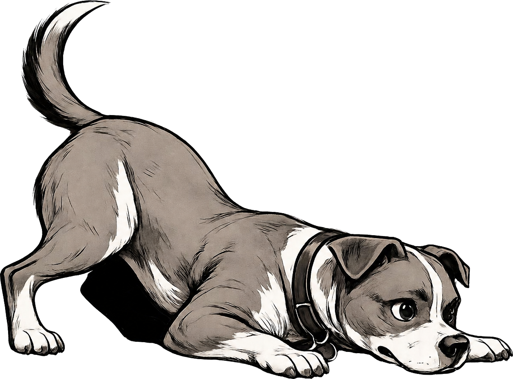

She follows me into the kitchen because she always follows me into the kitchen, but slower this morning, like she's thinking about it on the way. That's the thing I keep coming back to. Not the bowl, although the bowl is mostly full. Not the step she missed coming off the couch, although she missed it. The thinking about it. She has never had to think about following me into the kitchen.
It's been eleven years of not thinking about it. Eleven years of the same forty-foot path between the bedroom and the back door. The same nose pushed under the same arm at the same time of night. A body that knew what it was doing before the brain caught up. She is the only one in this house who has been here longer than the dishwasher.
So I notice. Of course I notice. You don't live with someone that long and not notice.
I tell myself it's nothing for a little while, the way you do. Maybe she got into something in the yard. Maybe it's the weather changing. Maybe she's just tired in the way any of us are tired some mornings, where the whole day already feels like a long hallway you don't want to walk down. I run through the inventory the way I always run through the inventory — when did she eat, when did she go out, did she drink, did she —
Then I stop running through the inventory because I realize I'm running through the inventory, and the only reason I run through the inventory is when something is already wrong.
Okay. Phone. Keys. Leash she barely needs anymore because she stays close on her own. The drive to the clinic is the drive I could do with my eyes closed because I have done it for puppy shots and the broken nail and the time she ate a sock and the time she didn't eat a sock but I thought she ate a sock. I keep glancing at her in the rearview. She's just — sitting there. Not panting. Not whining. Looking out the window the way she always does, except quieter, and that's somehow worse than if she were crying.
In the waiting room I do the thing where I make my voice sound normal so she doesn't get nervous. Good girl. We're just here for a check. Good girl. Her tail thumps once on the linoleum. That's the part that gets me — the trust. She has no idea. She thinks we're here together because we're always here together, and that has always been enough information.
They take her back. They are kind. They are kind in the specific way that people are kind when they're not yet ready to tell you what they think.
Then the bloodwork comes back, and it isn't nothing.
The vet walks me through it slowly. She is not selling me anything. I can tell the difference. She is laying it out the way you'd lay out a map for someone who has to walk a long way today and shouldn't be lied to about the distance. There is a real thing happening inside her. It is treatable. The treatment is not small. There is a procedure, and a stay, and what comes after the stay, and what comes after what comes after. Each piece is necessary. None of it is theatrical. None of it is padding. It is just — what it costs to make her okay.
She sets the estimate down on the counter.
I look at the number, and the room does the thing where it reorganizes around it.
I start doing the math. Not the polite math. The real one. The one where rent is a maybe and the car payment is a definitely-not and the electric goes on the pile and the late fees are a tax I'm willing to pay and the credit score is a problem for a future version of me who will be grateful to have a problem at all. I am willing to torch the month. I have already, in the span of about ninety seconds, decided to torch the month and call it a fair trade. I would make the call to my sister I do not want to make. I would sell the thing in the closet I told myself I would never sell. I am not the kind of person who was going to sit here this morning and weigh a credit score against eleven years of her, and I want that on the record, even if the only person taking the record is me.
The problem is the math still doesn't reach.
That's the part I wasn't ready for. I had braced for uncomfortable. I had braced for humiliating. I had not braced for not enough. Even with the month on fire. Even with the card maxed and the checking drained and every awkward phone call made. Even with all of it. The number on the paper is a different size than the number I can assemble out of my life, and the difference between those two numbers is not going to close just because I want it to close very, very badly.
The vet sees my face. She has seen this face before. She doesn't flinch and she doesn't pity me, both of which I am grateful for in a way I cannot say out loud. She starts talking about staging — what has to happen today, what can wait, what the cheapest road to an actual answer looks like. She is doing every single thing a person can do from her side of the counter. She is trying to build me a smaller version of the door. She is on my side. She has been on my side this whole morning.
But the smaller door has a number on it too. And the number on the smaller door is also more than I have today. Not by a lot. By enough.
That's the part nobody warns you about. Not the sickness. Not the bill. The geometry of the room. The way two people who want exactly the same thing — me, and her, and both of us looking at the same animal on the same table — can be standing five feet apart with a wall of arithmetic between them, and neither of us put the wall there, and neither of us knows how to take it down standing where we're standing.
They bring her out. They've made her comfortable. The tail does the remembering thing — not a wag, more like a recognition, like the whole morning was just a strange detour and now we're back to the part where we know each other. She leans into my leg the way she always leans into my leg. I crouch down. I put my forehead on the top of her head, which is the place my forehead has been a thousand times, and I tell her we're working on it. I tell her we are going to figure this out.
We walk to the car. She takes the curb slow. I match her pace.
In the car I sit there for a minute before I start it. She's in the passenger seat now. She's looking at me the way she looks at me when I've been quiet too long.
I keep thinking about the counter. About the moment the paper went down. About how, in that moment, I was a stranger to the math even though I wasn't a stranger to anyone in that building. They've known her since she was small enough to fit in one hand. They've known me almost as long. The vet tech at the front knows what kind of treats she takes and which arm she likes the blood pressure cuff on. None of that mattered when the number landed, because known and known for money are two different things, and the second one is the only one the counter cared about.
That's the part I can't get past. Not that the bill was big. Bills are big. That's not new. It's that there was no between — no version of me they had on file as someone who shows up, pays what he said he'd pay, month after quiet month, so that today, when the unquiet month finally came, there was already a thread to pull on. A history. A we know him. A reason for the conversation at the counter to start somewhere other than zero.
If somebody had told me a year ago — bring her in for her wellness, and pay for it across twelve months instead of one afternoon, in-house, with the same clinic you already drive to — I would have said yes without thinking. Not because the wellness exam is the thing that saves her. The wellness exam might be completely uneventful. Most of them are. That's the point. You come in, nothing's wrong, you pay your small monthly thing, you come in again next year, nothing's wrong, you pay your small monthly thing. And the whole time, without anyone making a big deal of it, you're becoming someone the clinic knows how to carry when the day comes that you need to be carried.
I don't know if anyone's built that yet. Here. With our clinic. But if they did — if there was a way to start being known like that, starting with a wellness visit small enough to say yes to every month, so that the next time something goes wrong I'm not a stranger to the math — I would start tonight. I would start in this parking lot. 